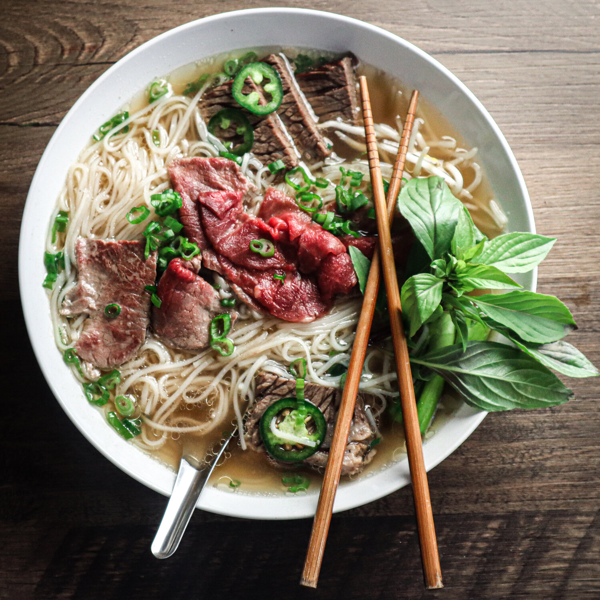

Pho

Pho is a Vietnamese soup consisting of bone broth, rice noodles,
and thinly sliced meat (usually beef).
It may also be served with bean sprouts, fresh herbs, limes, chiles,
and other garnishes.
Ingredients
- 4 pounds beef soup bones
- 1 onion, unpeeled and cut in half
- 5 slices fresh ginger
- 1 tablespoon salt
- 2 pods star anise
- 2 1/2 tablespoons fish sauce
- 4 quarts water
- 1 (8 ounce) package dried rice noodles
- 1 1/2 pounds beef top sirloin, thinly sliced
- 1/2 cup chopped cilantro
- 1 tablespoon chopped green onion
- 1 1/2 cups bean sprouts
- 1 bunch Thai basil
- 1 lime, cut into 4 wedges
- 1/4 cup hoisin sauce (Optional)
- 1/4 cup chile-garlic sauce (such as Sriracha®) (Optional)
Steps
- Preheat the oven to 425 degrees F (220 degrees C).
- Place beef bones on a baking sheet and roast in the
preheated oven until browned, about one hour.
- Place onion on a baking sheet and roast in the
preheated oven until blackened and soft,
about 45 minutes.
- Place bones, onion, ginger, salt, star anise,
and fish sauce in a large stockpot and cover with
four quarts of water. Bring to a boil and
reduce heat to low. Simmer on low for six to 10 hours.
Strain the broth into a saucepan and set aside.
- Place rice noodles in a large bowl filled with room
temperature water and allow to soak for one hour.
Bring a large pot of water to a boil and after the
noodles have soaked, place them in the boiling water
for one minute. Bring stock to a simmer.
- Divide noodles among four serving bowls; top with
sirloin, cilantro, and green onion. Pour hot broth over
the top. Stir and let sit until the beef is partially
cooked and no longer pink, one to two minutes. Serve with
bean sprouts, Thai basil, lime wedges, hoisin sauce,
and chile-garlic sauce on the side.